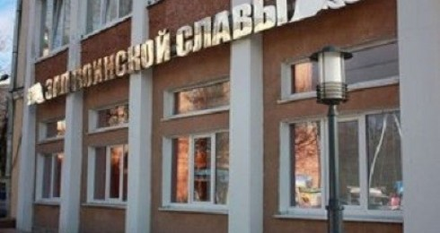

Зал воинской славы - 5 лет вместе с Великим городом
Зал воинской славы - 5 лет вместе с Великим городом
20 января 2012 года, в день празднования 68-й годовщины освобождения города Новгорода от немецко-фашистских захватчиков, в Великом Новгороде состоялось торжественное открытие Зала воинской славы, который является структурным подразделением МАУК «Дворец культуры и молодежи «ГОРОД».
Зал воинской славы расположился на месте бывшего Дома архитекторов и стал частью большого архитектурно-исторического проекта «Великий Новгород - Город воинской славы». Его местоположение было выбрано неслучайно: вблизи окольного вала города - старинного оборонительного сооружения, возле места, где некогда была расположена Чудинцева башня, рядом со стелой «Город воинской славы», установленной в честь присвоения Великому Новгороду этого почетного звания. Создание такого экспозиционно-выставочного центра позволило объединить все части проекта в единый комплекс, посвященный защитникам Новгородской земли, Великого Новгорода и всего Отечества.
Сегодня Зал воинской славы играет роль историко-культурного центра, в стенах которого создается возможность познакомиться с воинскими ритуалами, обычаями и традициями, прикоснуться к подлинной истории периода Великой Отечественной войны 1941-1945 гг., встретиться с представителями ветеранской общественности, военно-патриотических организаций, клубов и объединений. Благодаря сотрудничеству с Поисковой экспедицией «Долина» памяти Н.И. Орлова, выставочная экспозиция Зала воинской славы пополняется новыми экспонатами, организуются встречи с родными и близкими советских бойцов, останки которых были найдены в ходе поисковых экспедиций, проводимых в Новгородской области.
В Зале представлена постоянно действующая экспозиция, иллюстрирующая историю защиты Новгорода его жителями от вражеских вторжений, роль города в защите рубежей Отечества. Интерес вызывает и тот факт, что в экспозиции представлены не только значимые этапы воинской истории Великого Новгорода, но и малоизвестные факты участия новгородцев в защите Отечества. Основу экспозиции составляют восковые фигуры воинов в доспехах и обмундировании своей эпохи: «Новгородский ратник. XIII век», «Стрелец. XVII век», «Обер-офицер Новгородского кирасирского полка. 1812 год» и «Командир РККА времен ВОВ 1941-1945 гг.». Автором-изготовителем восковых фигур стал Михаил Нестеров, художник, скульптор, мастер восковых фигур, член Союза кинематографистов России.
В экспозиции в качестве иллюстраций воинской доблести новгородцев во времена Древней Руси, в эпоху Московского царства, в период Российской империи и в XX веке представлены изображения эскизов 16-ти рельеф-панно стелы «Город воинской славы», созданными Вадимом Боровых и Сергеем Гаевым, художниками-скульпторами, членами Союза художников России.
Неотъемлемой частью работы Зала являются патриотические мероприятия различной направленности — встречи с ветеранами, общественными организациями, представителями военно-исторических и патриотических движений, дискуссии по обсуждению вопросов отечественной истории, уроки мужества для подрастающего поколения, целью которых является воспитание чувства гордости за свою страну и ее историю. Доброй традицией стало вручение юным новгородцам паспортов гражданина Российской Федерации. В дни проведения на территории Великого Новгорода публичных мероприятий, посвященных празднованию Дней воинской славы (23 февраля, 9 мая), а также мероприятий, посвященных празднованию очередной годовщины освобождения Новгорода от немецко-фашистских захватчиков (20 января) и Дня города (12 июня), все категории граждан могут посетить экспозиции Зала воинской славы на бесплатной основе.
За прошедший период было организовано 26 выставок не только в Великом Новгороде, но и в Батецком, Солецком, Поддорском, Новгородском районах Новгородской области, экспозиции которых посетили более 38 тысяч человек.
Нельзя не отметить роль новгородцев в становлении и развитии Зала воинской славы. Значительную часть экспозиции составляют вещи, переданные жителями Великого Новгорода. Одними из первых дарителей были ветераны и члены их семей. За прошедшие 5 лет собран уникальный фонд подлинных вещей, состоящий из 1512 экспонатов. Благодаря пожертвованиям, поступившим в Фонд воинской славы от предприятий города и новгородцев, стало возможным воплощение художественной и технической концепций внутреннего оформления помещений Зала.
За такой недолгий период существования Зала воинской славы в нем происходили яркие, незабываемые ситуации. Так, одна из посетительниц увидела в экспозиции документ, заполненный ее отцом, погибшим в 1942 году под Новгородом. В своем отзыве она написала: «Во время посещения 15 мая Зала воинской славы я впервые увидела документ за подписью своего отца. Душевное волнение, которое я испытала, не покидает меня до сих пор. Для меня этот документ стал связующим звеном с погибшим отцом, героическими и трагическими событиями 1942 года…Огромная благодарность за благородный труд по воссозданию в нашей памяти подвигов дедов и отцов. С уважением и признательностью, Л.М. Ильичева, кандидат педагогических наук, профессор Московского государственного университета культуры и искусств.» В этих емких словах и заложен смысл деятельности Зала - все вместе мы должны сохранить в нашей памяти подвиги отцов и дедов, все то, что было сделано всеми поколениями русского народа для сохранения и процветания нашей родной страны.
20 января 2017 года Зал воинской славы приглашает новгородцев и гостей города на открытие новой выставки «Приближая Победу», приуроченной к празднованию 73-й годовщины освобождения города Новгорода от немецко-фашистских захватчиков и к 5-летию со дня торжественного открытия Зала.
 Порядок функционирования ДК "ГОРОД" с 15 ноября 2021 года
Порядок функционирования ДК "ГОРОД" с 15 ноября 2021 года Вся информация о творческой жизни Дворца культуры представлена в нашей официальной группе в ВКонтакте
Вся информация о творческой жизни Дворца культуры представлена в нашей официальной группе в ВКонтакте Основные правила безопасности дома и на улице
Основные правила безопасности дома и на улице